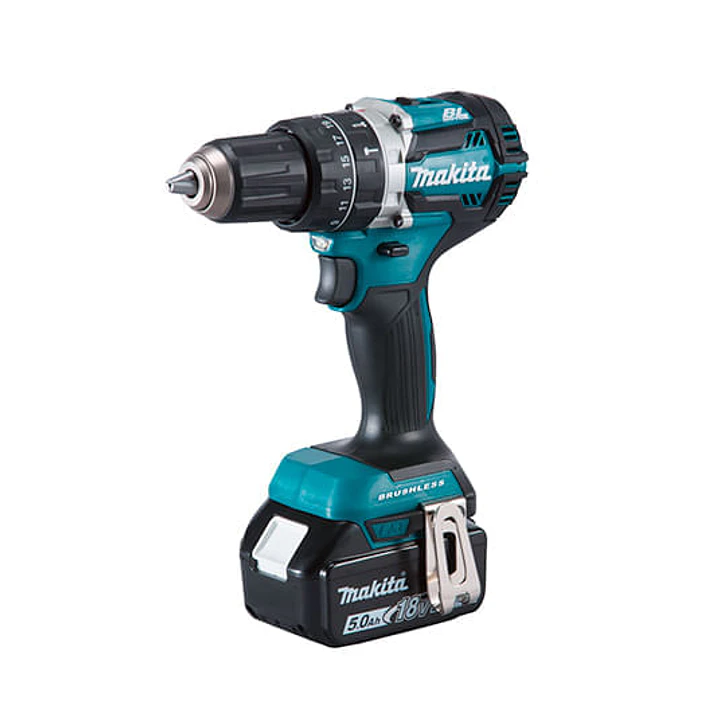

Taladro percutor o atornillador
Publicado el

Se parecen, cuestan parecido y muchos clientes se llevan el que no era. La diferencia no está en la potencia sino en cómo aplican esa potencia, y eso decide si vas a poder perforar el muro de tu casa o no.
El atornillador: solo gira
Hace un movimiento de rotación, nada más. Es liviano, casi siempre a batería, y sirve para atornillar, armar muebles y perforar madera o metal delgado.
Si intentas hacer un hoyo en hormigón con uno, la broca gira sobre el mismo punto sin avanzar. Terminas quemando la broca y el motor.
El percutor: gira y golpea
Además de girar, hace miles de golpes por minuto hacia adelante. Ese martilleo es el que rompe el material duro para que la broca pueda avanzar.
Es el que necesitas para hormigón, ladrillo y piedra. Casi todos traen un interruptor para desactivar la percusión, así que también sirve para madera. Por eso, si vas a comprar solo una máquina, compra el percutor.
Cuál comprar según lo que vas a hacer
- Colgar repisas en tabiquería de volcanita
- Atornillador. No hay material duro que romper, y con tarugos de expansión basta.
- Anclar algo a un muro de ladrillo u hormigón
- Percutor, sin discusión.
- Armar muebles todo el día
- Atornillador a batería. El percutor pesa el doble y te va a cansar el brazo.
- Una sola máquina para todo
- Percutor con percusión desactivable. Cubre los tres casos anteriores.
La broca importa tanto como la máquina
- Widia (punta de metal duro) para hormigón y ladrillo. Es la que se usa con percusión.
- HSS para metal. Nunca la uses con percusión: se parte.
- De tres puntas para madera. Entra derecha y no astilla la superficie.
Una broca de metal en un muro de hormigón se echa a perder en menos de un minuto, aunque tengas la máquina correcta. Es el otro error clásico.